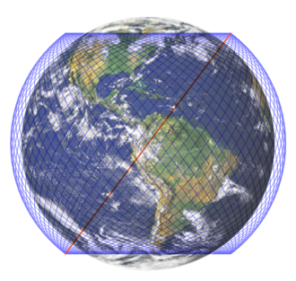

・StraLinkとは？
Wikipedia記事へ
「Starlink」では高度550kmの上空に衛星が数千基が飛ぶ
一般的な通信衛星は、赤道上36000kmに打ち上げられます。この起動に衛星打ち
上げると地球の自転と同じく24時間で1周し、
地上から衛星が静止しているように見えます。そのため静止衛星といわれます。
この“静止衛星”を太平洋、大西洋、インド洋上に配置して、世界中に通信を送る
というのがこれまでの衛星通信です。
『Starlink』は、高度約550kmの低軌道上に多数の人工衛星を打ち上げて、宇宙から ブロードバンド通信サービス、主にインターネットを提供するというものです。
現在、低軌道周回に約1,500基超の“非静止衛星”が運用されています（2021年12月時点） 。従来の“静止衛星”と比べて、地表からの距離が65分の1程度と大きく近づくため、 これまでの衛星通信に比べると、大幅な低遅延と高速伝送を実現できます。
『Starlink』は、高度約550kmの低軌道上に多数の人工衛星を打ち上げて、宇宙から ブロードバンド通信サービス、主にインターネットを提供するというものです。
現在、低軌道周回に約1,500基超の“非静止衛星”が運用されています（2021年12月時点） 。従来の“静止衛星”と比べて、地表からの距離が65分の1程度と大きく近づくため、 これまでの衛星通信に比べると、大幅な低遅延と高速伝送を実現できます。
「Starlink」の通信によって、これまでは電波がつながりにくかったエリアが、よりつながりやすくなる。
・イーロン・マスク
宇宙開発企業スペースXの創設者およびCEO
イーロン・マスク - Wikipedia・衛星コンステレーション
引用 コンステレーションとは
国ごとの提供状況
2021年9月現在、スターリンクは17カ国で提供されており、そのほか多くの国で規制当局に認可を申請している。 日本では、KDDIがスペースXと業務提携し、2022年に1,200箇所の基地局を介して地方の顧客向けにより高速な通信の提供を目指すことを発表した
| 地域 | 国 | 時期 | 現状 |
|---|---|---|---|
| 北アメリカ | アメリカ | 2020年11月 | ベータ版 |
| アジア | 日本 | 2022 年（予定） | 予定 |